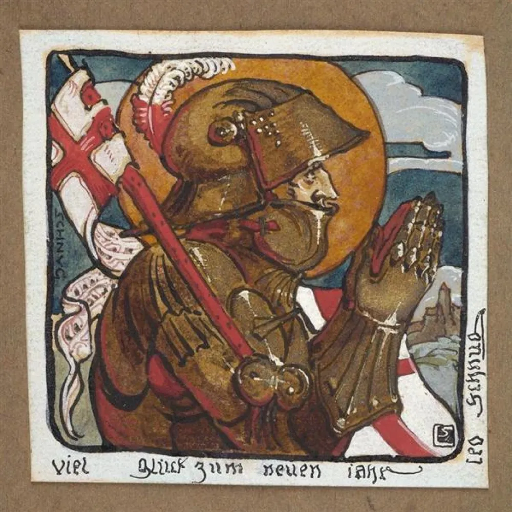

"Knight in Prayer" is a sculpture created by Dutch artist Leo Schnug. The sculpture depicts a medieval knight in a praying position, with his head bowed and hands clasped in front of him. The sculpture is made of bronze and is life-size, standing at around six feet tall.
The sculpture is meant to convey a sense of humility and devotion, as the knight is depicted in a contemplative and prayerful state. The Knight is dressed in full armor, with a surcoat and a cloak, showing his profession as a warrior.
The sculpture is noteworthy as it is a modern interpretation of the medieval knight, which is often associated with strength and valor. By depicting a knight in prayer, the artist is highlighting the human emotions and feelings of a warrior.
It's also interesting to notice the chosen pose, as the knight is not depicted in a heroic pose or in an action, rather he is depicted in a moment of introspection, in a position of surrender, showing how war is not only about strength and courage but also about sacrifice and devotion.
Schnug's work usually addresses social issues and critical questions about culture, history and politics. It seems like this sculpture is no exception and raises some questions about the role of the military and the way it's perceived in society. It reminds the viewer that even soldiers are human and have feelings and spiritual needs.
The sculpture was first displayed at the Museum Catharijneconvent in Utrecht, Netherlands and since then have been exhibited in various venues around Europe. It's considered a powerful representation of the human side of soldiers, and a reflection of the emotional and spiritual aspect of war.
Oeuvre
